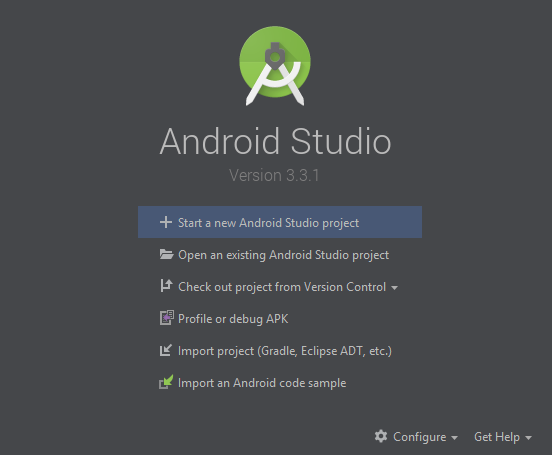
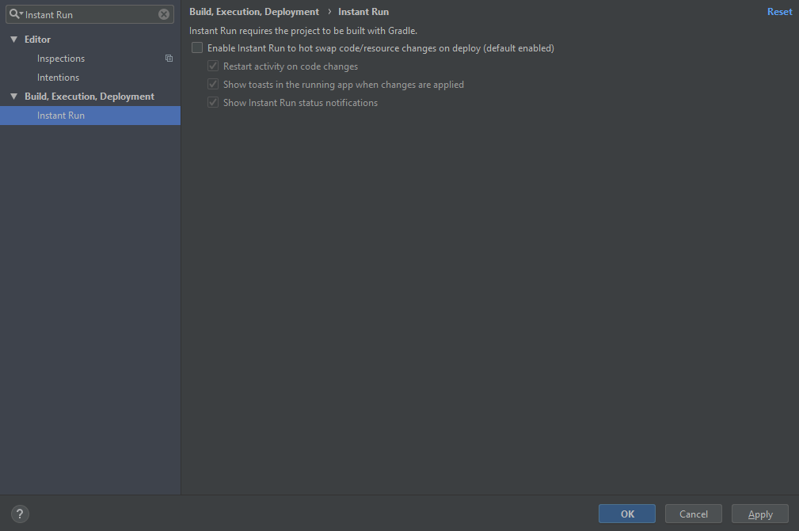

FTC Software 0.1: Get your Tools
Before we do anything, we need to set some programs up on your computer: Git and Android Studio. These tools will let you easily code with your team.
-
What is Git?
If you already have and use Git, you can skip to Step 4.
Git is a code-sharing tool that will let you work on the code collaboratively with your team. Here, we'll be using the CLI (Command Line Interface) version, rather than the GUI (Graphical User Interface). This basically means that, instead of clicking on buttons, we'll be entering text commands into a terminal. You might find this harder at first, but it will prepare you for more advanced subjects.
Git works together with a website called GitHub. GitHub holds the Git files in the cloud, letting everyone on your team work together. If you don't already have a GitHub account, you will need one; you can register at this link. Once you register, make sure to let a senior member know your username in order to allow you onto the robotics projects!
-
Get Git
If you are using Linux, you might already have git installed. Open a Terminal window (click on the button in the top left, then search for "Terminal"), then enter the command "
git". If you see something similar to the example below, you can skip to the next step.Otherwise, enter the terminal command "
sudo apt-get install git". This will install Git on your computer. If it asks for a password, ask a senior team member to tell you the password. After this command finishes, entergitagain to test if it installed correctly-- if it did, you should see something similar to the example below, in which case you can move on to the next step. Otherwise, ask a senior team member.If you are using Windows, you can get git by clicking on this link. Install the executable by double-clicking on it once it is downloaded; it may request to make changes to your device. You can just click "next" on all of the options in the installer; the default settings are fine for Robotics. After the installation is complete, open your Windows start menu with the button in the lower left hand corner. Then, search for and open the application "Git Bash" using the "Type here to search" box. When you open Git Bash, it should show you a terminal. Enter in the command "
git" in order to make sure that everything is working correctly. If you see something similar to the example below, you can proceed to the next step.
user@computer:~ $ git
usage: git [--version] [--help] [-C <path>] [-c name=value]
[--exec-path[=<path>]] [--html-path] [--man-path] [--info-path]
[-p | --paginate | --no-pager] [--no-replace-objects] [--bare]
[--git-dir=<path>] [--work-tree=<path>] [--namespace=<name>]
<command> [<args>]
These are common Git commands used in various situations:
start a working area (see also: git help tutorial)
clone Clone a repository into a new directory
init Create an empty Git repository or reinitialize an existing one
work on the current change (see also: git help everyday)
add Add file contents to the index
mv Move or rename a file, a directory, or a symlink
reset Reset current HEAD to the specified state
rm Remove files from the working tree and from the index
examine the history and state (see also: git help revisions)
bisect Use binary search to find the commit that introduced a bug
grep Print lines matching a pattern
log Show commit logs
show Show various types of objects
status Show the working tree status
grow, mark and tweak your common history
branch List, create, or delete branches
checkout Switch branches or restore working tree files
commit Record changes to the repository
diff Show changes between commits, commit and working tree, etc
merge Join two or more development histories together
rebase Reapply commits on top of another base tip
tag Create, list, delete or verify a tag object signed with GPG
collaborate (see also: git help workflows)
fetch Download objects and refs from another repository
pull Fetch from and integrate with another repository or a local branch
push Update remote refs along with associated objects
'git help -a' and 'git help -g' list available subcommands and some
concept guides. See 'git help <command>' or 'git help <concept>'
to read about a specific subcommand or concept.
-
Configuing Git
Every edit in git includes a field for the user who "commited" (added) it. We need to tell your local installation of git what your name is. Luckily, there is a simple command to do this:
git config --global user.name "Your GitHub Username".You can simply paste this command into your terminal (or Git Bash), but remember to change the name!
Next, use this command to tell git what your email is:
git config --global user.email email@example.comAgain, remember to change the email to your GitHub login email!
Neither of these commands should give you any output, but you can check that they succeeded with
git config --list. That command should give you a list of configuration values; you should see your name and email under the right fields! -
What is Android Studio?
Android Studio is an IDE, or Integrated Development Environment. You will be using Android Studio to write your code; this is better than a simple text editor because it will check your code for errors, help you build your code, and allow you to easily install dependancies (programs that your code needs in order to run).
-
Installing Android Studio
If your computer already has Android Studio, make sure it is version 3.0 or greater. You can see the version number by going to "Help > About" on the top bar.
If you're advanced enough to prefer something else, you can totally use something other than Android Studio.
To install Android Studio, first get the installer from here. Just click on the "Download Android Studio" button, and the webpage should tell you how to download it.
On Linux, next you will unzip the file. Right-click on the zip file in your downloads, and select the option to "Extract All Files". In the popup menu that opens up, select your Home to extract the files. This might take a long time, don't worry; that's normal.
Once the extraction completes, go back to the Terminal window that you opened when installing Git. Look at the current directory, directly before the dollar sign on the command line. If this hasn't been changed, it should just be a tilde (~). This means that the terminal is currently in your home directory.
To change the directory, use the
cdcommand to move to Android Studio's folder:cd android-studio. Then, navigate to thebinfolder;cd bin. Finally, run thestudio.shfile:./studio.sh.This will launch Android Studio! It might take a few minutes to open, but once it succeeds, you'll see a screen like the example below. You probably want to pin it to your launcher. If it hasn't finished after five minutes, try entering
./studio.shagain. Once you see the window, go on to the next step!On Windows, just launch the .exe file that was downloaded. It will ask for administrator permissions. Once you agree and the installer loads, just click "Next" until you see a green progress bar.
Once the final installation completes, make sure the "Launch Android Studio" box is checked, and click "Finish". You should eventually see a window that looks like the example below. It might take up to a minute to load, or more if you have an outdated computer. Please be patient! If it hasn't loaded after 5 minutes, try to launch Android Studio by searching in the Start menu. If you see this window, you can move on to the next step.
 -
Configuring Android Studio
Once you install Android Studio, there's only a small amount of extra configuration to do. Click on the "Configure" button in the bottom right corner of the Android Studio window. Then, click on "Settings" to open up the settings menu.
From here, click on the search bar in the top-left corner. Search for "Instant Run"; this should show you a page with four checkmarks. All of them will be checked. Uncheck the top checkbox, which is labelled "Enable Instant Run to hot swap code/resource changes on deploy (default enabled)". Then, click the Apply button in the lower right.
After this, you can click "Ok" in the lower-right corner and go back to the main Android Studio window. From here, you'll need to get some code to work on! In the next set of instructions, we'll get the First Driver Controller template app.
